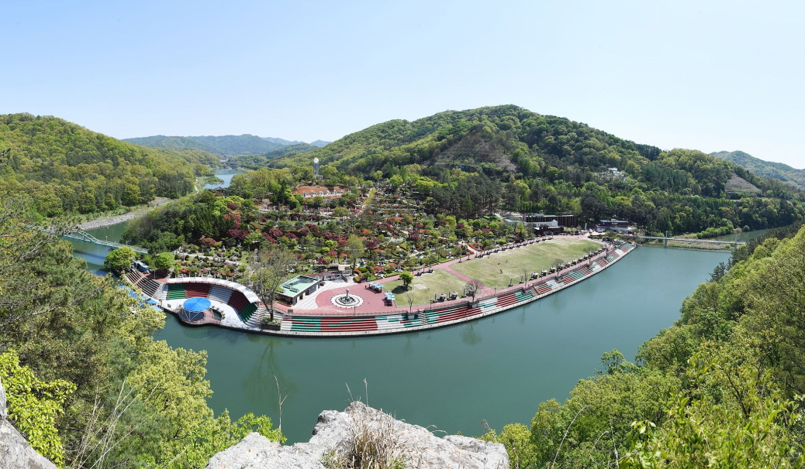
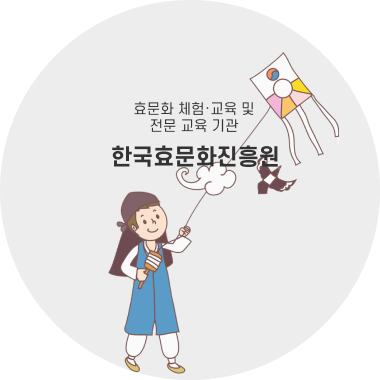
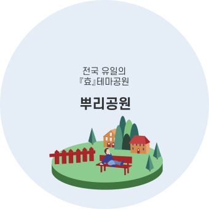
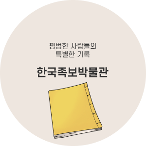

효월드 소개

효월드는 효문화마을, 뿌리공원, 한국족보박물관, 한국효문화진흥원을 아우르는 효문화시설 집합단지로서 효의 가치와 의미에 대한 재확립은 물론 중심역할 수행을 위한 공간으로 민족전통 계승과 효문화 교육에 기여하고 있으며, 인근에는 오월드, 청소년수련마을, 단재신채호선생생가지 등이 있습니다.
- 위치 대전광역시 중구 뿌리공원로 47 (안영동)
- 연락처 (042)288-8200(ARS)
효!월드 바로가기 메뉴
효!월드 소개



효!월드 내에 있는 효문화마을, 뿌리공원, 한국족보박물관을 안내합니다.